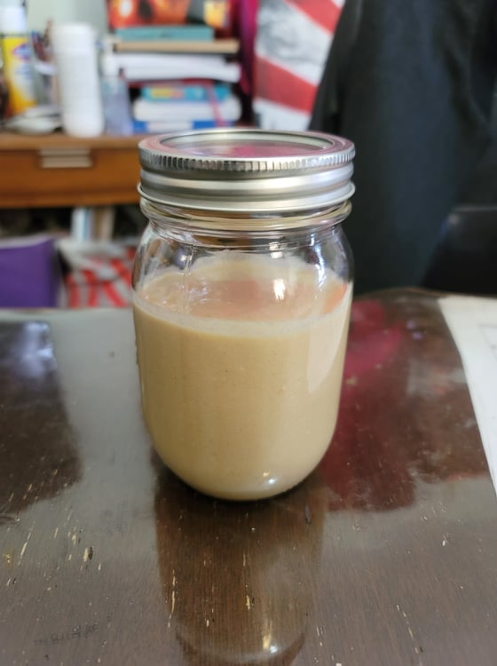

Tahini

Ingredients:
- 2 cups Sesame seeds
- 4-8 tbsp Olive oil, Sesame oil, or any neutral flavored oil
Instructions:
- Toast the sesame seeds in a large pan for a few minutes, until lightly browned and fragrant. Then remove from heat and allow to cool.
- Transfer the sesame seeds to a food processor. Process until very crumbly and it starts to release its oils, about 3-5 minutes.
- Add in oil as needed and continue to process until it forms a smooth paste, about another 3-5 minutes. Use immediately or store in a jar in the fridge.